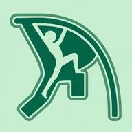

Sports apps for coaches and athletes
I'm a D1 pole vaulter at the University of South Florida and a health science major. I'm into biomechanics, and I spend a lot of time helping coaches track and refine training. These are tools I built around that: quick to use, easy to read, and easy to share with athletes.
